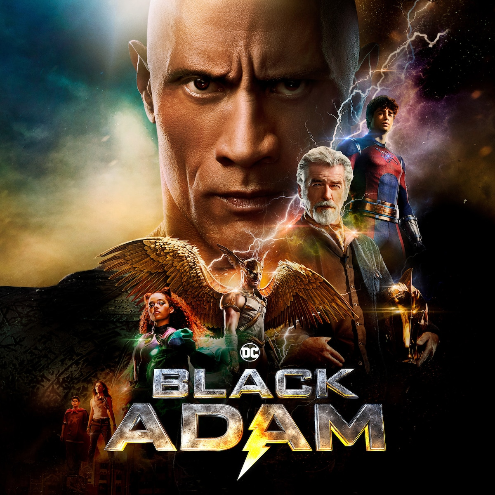

HOME
In ancient Kahndaq, Teth Adam was bestowed the almighty powers of the gods. After using these powers for vengeance, he was imprisoned, becoming Black Adam. Nearly 5,000 years have passed, and Black Adam has gone from man to myth to legend. Now free, his unique form of justice, born out of rage, is challenged by modern-day heroes who form the Justice Society: Hawkman, Dr. Fate, Atom Smasher and Cyclone.
Screenplay:
Jaume Collet-Serra
Adam Sztykiel
Release Date:
October 21, 2022
Genres:
Action/Adventure
Rating:
PG-13
Running Time:
2h 5m
Director:
Jaume Collet-Serra
Cinematography
Lawrence Star